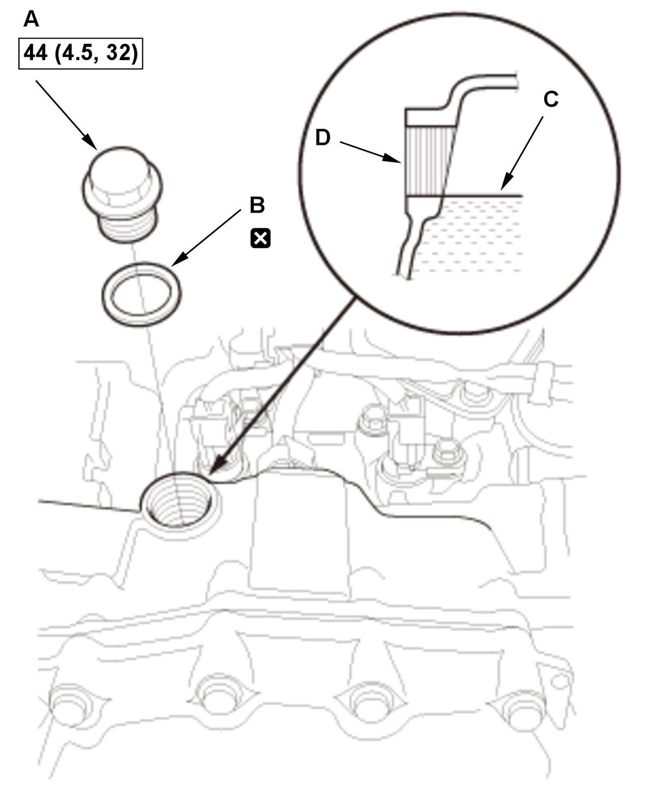

Transmission Fluid (HCF-2) Level Check (K20C2 (CVT)): Check
NOTE:
- How to read the torque specifications .
- Keep all foreign particles out of the transmission.
- Check the transmission fluid level after the shift lever operation without spending too much time.
- Vehicle - Lift
- Engine Undercover Plate - Remove
- Transmission Fluid Level - Check

Courtesy of HONDA, U.S.A., INC.1. Start the engine, and warm it up to normal operating temperature (the radiator fan comes on twice). 2. While pressing the brake pedal firmly, shift in turn the transmission to P→R→N→D→S→L→S→D→N→R→P position/mode (without paddle shifter)/P→R→N→D→S→D→N→R→P position/mode (with paddle shifter), and wait for at least 3 seconds to each position/mode.
3. Turn the engine off.
4. Remove the filler plug (A) with the sealing washer (B).
NOTE: Be careful not to burn yourself by the hot part.
5. Make sure the transmission fluid is at the proper level (C).
NOTE: If the fluid level is below the proper level, check for fluid leaks at the transmission and the fluid lines. If a problem is found, fix it before filling the transmission with transmission fluid.
6. If necessary, add the transmission with the recommended fluid into the filler plug hole (D) until transmission fluid overflows. Always use Honda HCF-2 Continuously Variable Transmission Fluid.
NOTE: Using the wrong type of fluid will damage the transmission.
7. Reinstall the filler plug with a new sealing washer.
- All Removed Parts - Install
1. Install the parts in the reverse order of removal.